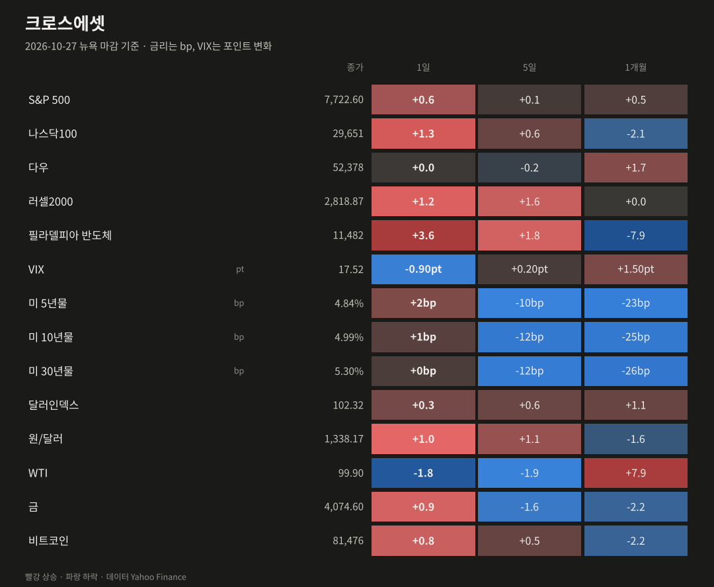
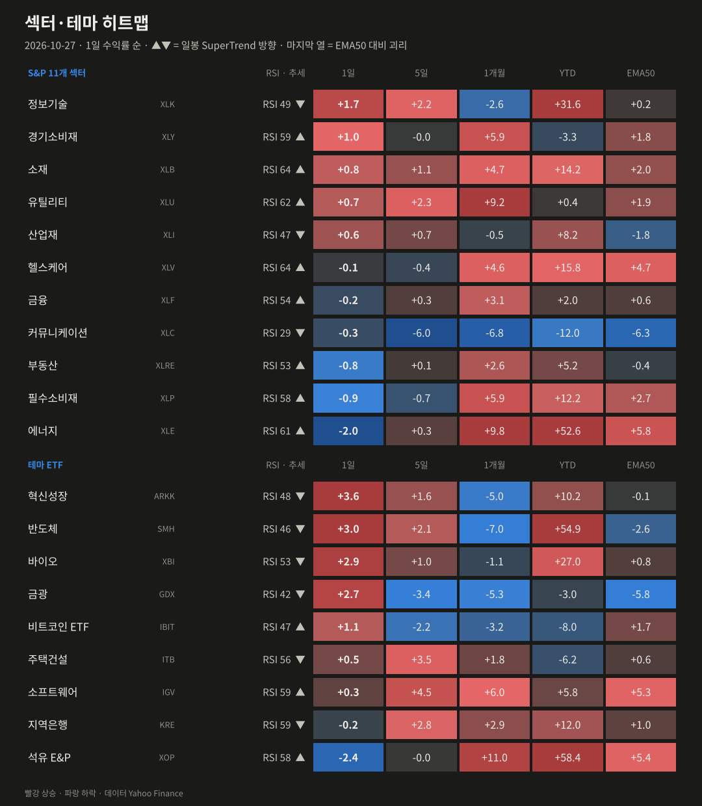
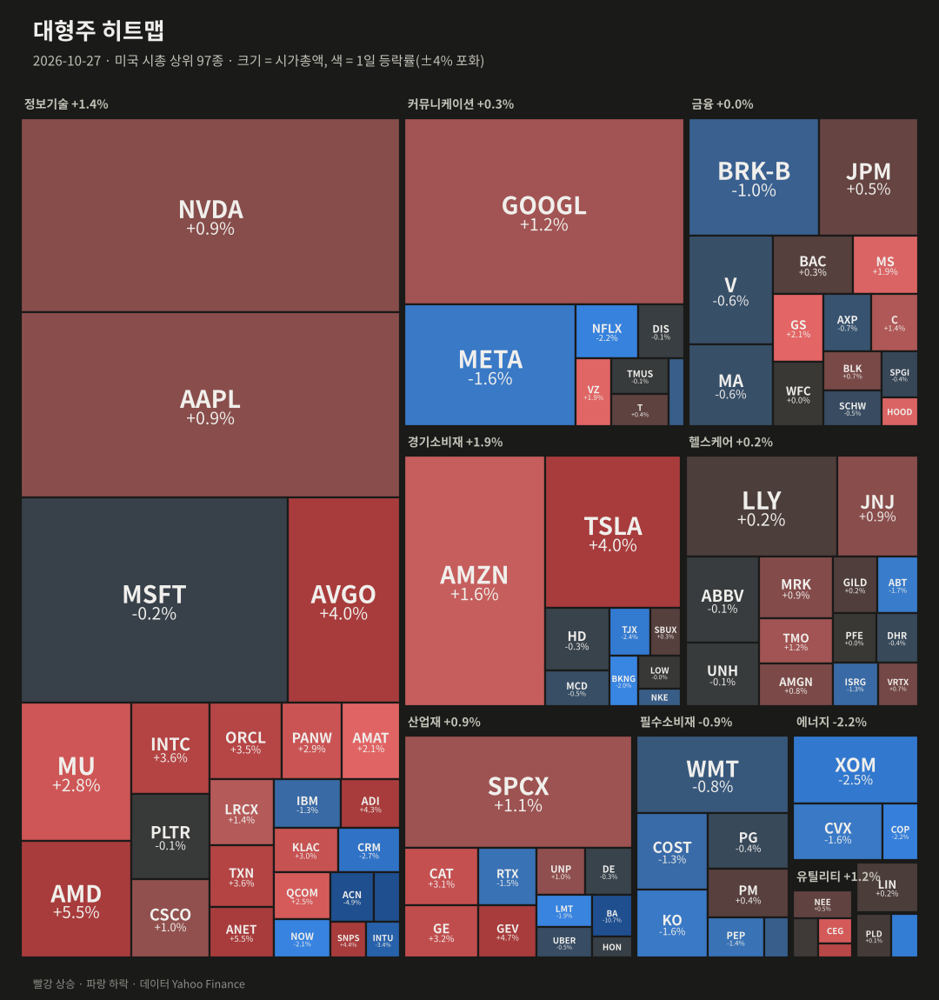
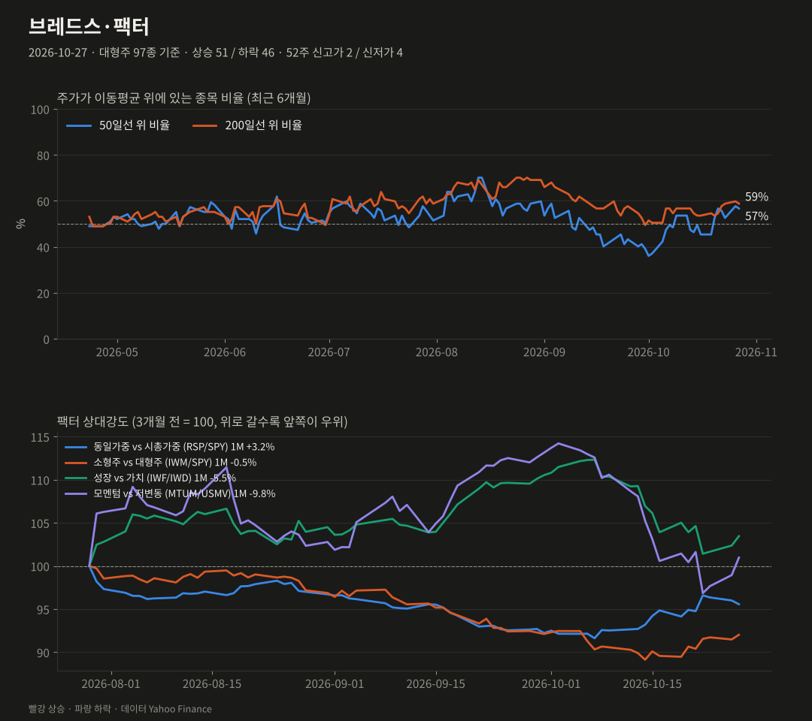
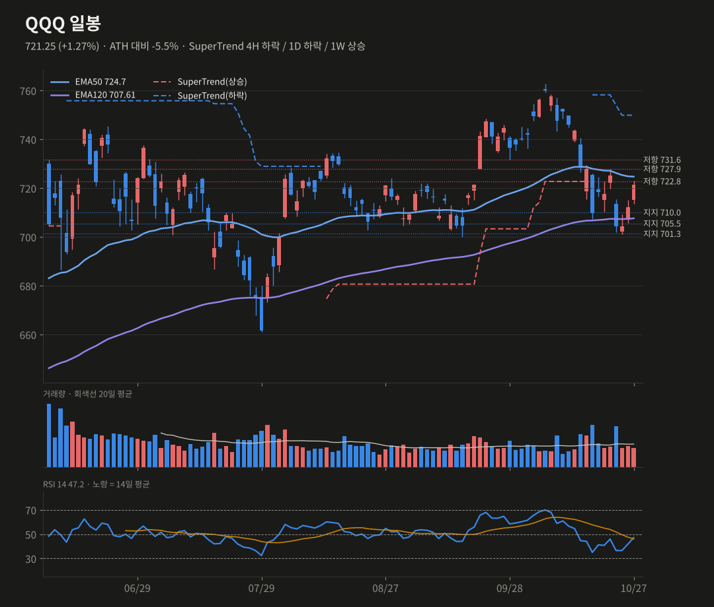
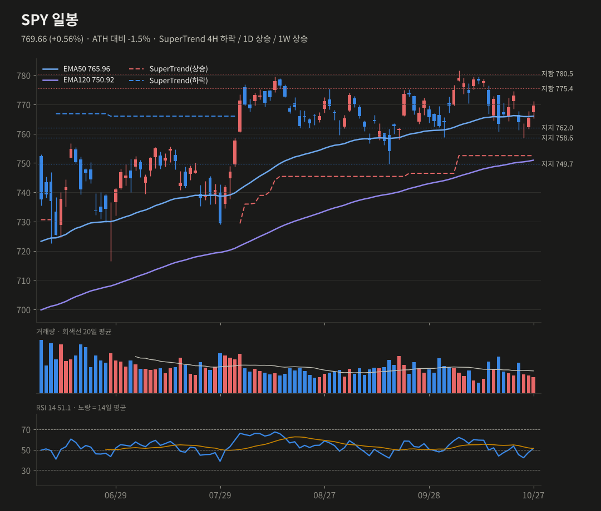
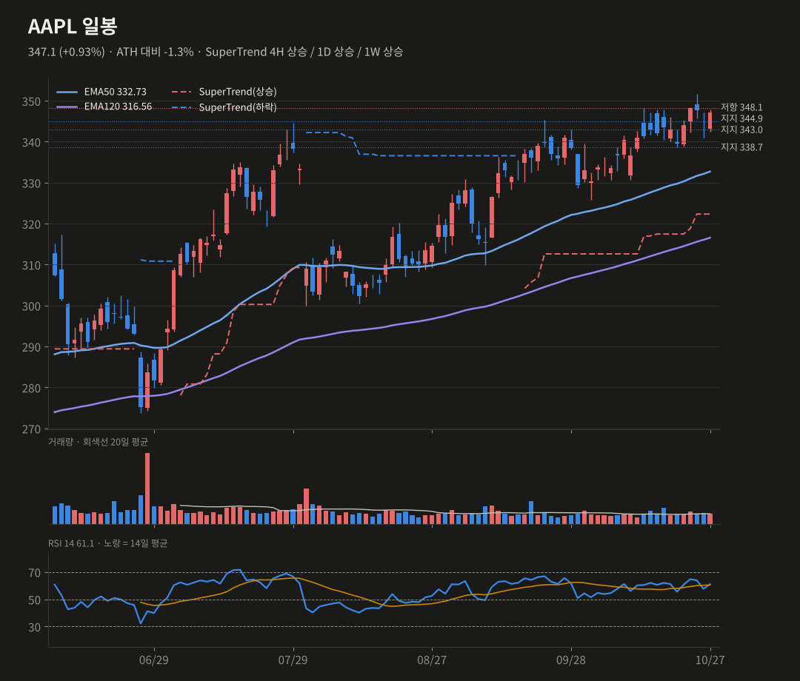

미증시 마감 브리핑
10/27(화) 뉴욕 마감 기준 · 생성 2026-10-28 19:49 KST
반도체가 지수를 끌어올렸지만 반등 폭은 좁았어요. FOMC·MSFT·알파벳을 앞둔 선별 매수예요.
S&P 5007,722.60+0.60%
나스닥10029,651+1.29%
다우52,378+0.03%
러셀20002,818.87+1.16%
반도체(SOX)11,482+3.60%
VIX17.52-0.90pt
미 10년물4.99%+0.70bp
원/달러1,338.17+1.01%
요약
- 지수: SOX +3.6%가 끌어올린 반등이지만 상승 종목 51/97로 폭은 좁았어요.
- 매크로: 10년물 4.99% 보합, WTI 100달러 아래, 원/달러는 1,338원으로 1.0% 올랐어요.
- 기술적: QQQ는 722.8~727.9 저항 앞, SPY는 EMA50 회복, AAPL은 박스 상단에서 대기 중이에요.
- 오늘 밤 볼 것: FOMC(한국 03:00), MSFT·알파벳 capex 가이던스예요.
종합 판단
반도체 주도의 이틀 반등으로 지수 단기 지표는 회복됐어요. 하지만 동일가중과 브레드스가 따라오지 않는 좁은 반등이에요. 오늘 밤 FOMC와 MSFT·알파벳의 capex 가이던스가 QQQ 727.9 돌파를 가를 분기점이에요.
반도체 주도의 이틀 반등으로 지수 단기 지표는 회복됐어요. 하지만 동일가중과 브레드스가 따라오지 않는 좁은 반등이에요. 오늘 밤 FOMC와 MSFT·알파벳의 capex 가이던스가 QQQ 727.9 돌파를 가를 분기점이에요.
무엇이 시장을 움직였나
- 반도체·AI 인프라 반등: SOX +3.6%, ANET·AMD +5.5%, AVGO +4.0%. 엔비디아의 Meta 30억 달러 투자, 오라클의 알파벳 TPU 도입, 앤트로픽 S-1을 근거로 한 브로드컴 투자의견 상향이 겹쳤어요.
- 경기지표 호조: 10월 소비자신뢰 91.7(예상 약 81), 9월 내구재 주문 +1.8%(예상 +1.7%).
- 다우는 보합(+0.03%)이었어요. 보잉이 실적 부진으로 −10.7%(거래량 20일 평균의 6배)였고, ACN −4.9%·ADBE −4.0%·INTU −3.4% 등 소프트웨어 대형주도 약했어요.
- WTI가 −1.8% 내려 100달러 아래(99.9)로 오면서 에너지가 −2.0%로 가장 약했어요. 10년물은 4.99%로 보합이고 VIX는 17.5로 내려왔어요.

| 자산 | 종가 | 1일 | 5일 | 1개월 |
|---|---|---|---|---|
| S&P 500 | 7722.6 | +0.60% | +0.13% | +0.51% |
| 나스닥100 | 29651.44 | +1.29% | +0.55% | -2.07% |
| 다우 | 52377.57 | +0.03% | -0.23% | +1.74% |
| 러셀2000 | 2818.87 | +1.16% | +1.64% | +0.03% |
| 필라델피아 반도체 | 11482.5 | +3.60% | +1.76% | -7.88% |
| VIX | 17.52 | -0.90pt | +0.20pt | +1.50pt |
| 미 5년물 | 4.84 | +1.6bp | -9.5bp | -22.8bp |
| 미 10년물 | 4.993 | +0.7bp | -12.4bp | -24.7bp |
| 미 30년물 | 5.305 | +0.4bp | -12.0bp | -25.6bp |
| 달러인덱스 | 102.32 | +0.35% | +0.58% | +1.11% |
| 원/달러 | 1338.17 | +1.01% | +1.07% | -1.57% |
| WTI | 99.9 | -1.83% | -1.86% | +7.88% |
| 금 | 4074.6 | +0.90% | -1.64% | -2.25% |
| 비트코인 | 81475.52 | +0.83% | +0.50% | -2.16% |

| 섹터·테마 | 1일 | 5일 | 1개월 | YTD | RSI | 일봉 추세 |
|---|---|---|---|---|---|---|
| 혁신성장 ARKK | +3.59% | +1.63% | -5.01% | +10.2% | 48 | 하락 |
| 반도체 SMH | +3.02% | +2.13% | -7.00% | +54.9% | 46 | 하락 |
| 바이오 XBI | +2.90% | +1.04% | -1.13% | +27.0% | 53 | 하락 |
| 금광 GDX | +2.68% | -3.38% | -5.35% | -3.0% | 42 | 하락 |
| 정보기술 XLK | +1.70% | +2.18% | -2.59% | +31.6% | 49 | 하락 |
| 비트코인 ETF IBIT | +1.06% | -2.16% | -3.20% | -8.0% | 47 | 상승 |
| 경기소비재 XLY | +1.04% | -0.04% | +5.92% | -3.3% | 59 | 상승 |
| 소재 XLB | +0.78% | +1.07% | +4.67% | +14.2% | 64 | 상승 |
| 유틸리티 XLU | +0.71% | +2.32% | +9.17% | +0.4% | 62 | 상승 |
| 산업재 XLI | +0.57% | +0.67% | -0.51% | +8.2% | 47 | 하락 |
| 주택건설 ITB | +0.53% | +3.47% | +1.80% | -6.2% | 56 | 하락 |
| 소프트웨어 IGV | +0.35% | +4.54% | +6.02% | +5.8% | 59 | 상승 |
| 헬스케어 XLV | -0.06% | -0.36% | +4.62% | +15.8% | 64 | 상승 |
| 지역은행 KRE | -0.21% | +2.78% | +2.88% | +12.0% | 59 | 하락 |
| 금융 XLF | -0.25% | +0.29% | +3.12% | +2.0% | 54 | 상승 |
| 커뮤니케이션 XLC | -0.26% | -6.00% | -6.84% | -12.0% | 29 | 하락 |
| 부동산 XLRE | -0.84% | +0.14% | +2.64% | +5.2% | 53 | 상승 |
| 필수소비재 XLP | -0.92% | -0.68% | +5.92% | +12.2% | 58 | 상승 |
| 에너지 XLE | -2.05% | +0.35% | +9.84% | +52.6% | 61 | 상승 |
| 석유 E&P XOP | -2.37% | -0.02% | +11.03% | +58.4% | 58 | 상승 |

| 상승 상위 | 1일 | 거래량(20일 대비) | 하락 상위 | 1일 | 거래량 |
|---|---|---|---|---|---|
| ANET | +5.51% | x1.0 | BA | -10.69% | x6.18 |
| AMD | +5.45% | x1.07 | ACN | -4.88% | x0.75 |
| GEV | +4.67% | x1.32 | ADBE | -3.97% | x1.11 |
| SNPS | +4.42% | x0.8 | INTU | -3.37% | x0.66 |
| ADI | +4.27% | x1.26 | CRM | -2.71% | x0.98 |
| TSLA | +4.04% | x1.22 | XOM | -2.51% | x1.25 |

대형주 97종: 상승 51 / 하락 46 · 50일선 위 56.7% (전일 57.7%, 5일 전 52.6%) · 200일선 위 58.8% · 52주 신고가 2 / 신저가 4
지수 상승에 비해 오른 종목 수가 적었고, 동일가중(RSP)이 시총가중(SPY)보다 0.45%p 약했어요. 반도체·대형 기술주에 쏠린 반등이에요.
| 팩터 스프레드 | 1일 | 5일 | 1개월 |
|---|---|---|---|
| 동일가중 vs 시총가중 (RSP/SPY) | -0.45% | +0.69% | +3.16% |
| 소형주 vs 대형주 (IWM/SPY) | +0.59% | +1.51% | -0.47% |
| 성장 vs 가치 (IWF/IWD) | +1.06% | -0.44% | -5.55% |
| 모멘텀 vs 저변동 (MTUM/USMV) | +2.05% | +0.53% | -9.85% |
기술적 분석 · 확률
TradingView 설정과 맞춘 지표(EMA50·EMA120, SuperTrend ATR20×4, RSI14, MACD 12/26/9). 확률은 차트 기반 추정치예요.
QQQ 721.25 +1.27%
SuperTrend 4H 하락 / 1D 하락 / 1W 상승 · RSI 47.16
단기 반등 55% · 스윙 상승 45% (+5)
4H MACD 골든크로스, 1D 히스토그램 −4.49→−3.26 급축소. 722.8~727.9 저항대를 네 번째 시험 중이에요.
상방 727.9 종가 돌파 → 735(4H SuperTrend)
하방 707.6(EMA120) 이탈 → 701.3
SuperTrend 4H 하락 / 1D 하락 / 1W 상승 · RSI 47.16
단기 반등 55% · 스윙 상승 45% (+5)
4H MACD 골든크로스, 1D 히스토그램 −4.49→−3.26 급축소. 722.8~727.9 저항대를 네 번째 시험 중이에요.
상방 727.9 종가 돌파 → 735(4H SuperTrend)
하방 707.6(EMA120) 이탈 → 701.3
SPY 769.66 +0.56%
SuperTrend 4H 하락 / 1D 상승 / 1W 상승 · RSI 51.1
단기 상승 55% (+5) · 스윙 상승 50% (+5)
1D EMA50(766.0)과 RSI 50 회복, 4H 골든크로스예요. 다만 거래량이 평균의 0.71배로 약해요.
상방 775.4 돌파 → 781.6(ATH)
하방 766.0 이탈 → 762~764, 758.6
SuperTrend 4H 하락 / 1D 상승 / 1W 상승 · RSI 51.1
단기 상승 55% (+5) · 스윙 상승 50% (+5)
1D EMA50(766.0)과 RSI 50 회복, 4H 골든크로스예요. 다만 거래량이 평균의 0.71배로 약해요.
상방 775.4 돌파 → 781.6(ATH)
하방 766.0 이탈 → 762~764, 758.6
AAPL 347.1 +0.93%
SuperTrend 4H 상승 / 1D 상승 / 1W 상승 · RSI 61.1
단기 상승 50% (+5) · 스윙 상승 50%
344.9 회복으로 돌파 실패가 무효가 됐고, 1D·4H 히스토그램도 다시 올라섰어요. 실적(11/2)을 앞두고 박스 상단에 있어요.
상방 351.7 종가 돌파 → 신고가 추세 재개
하방 344.9 재이탈 → 338.7
SuperTrend 4H 상승 / 1D 상승 / 1W 상승 · RSI 61.1
단기 상승 50% (+5) · 스윙 상승 50%
344.9 회복으로 돌파 실패가 무효가 됐고, 1D·4H 히스토그램도 다시 올라섰어요. 실적(11/2)을 앞두고 박스 상단에 있어요.
상방 351.7 종가 돌파 → 신고가 추세 재개
하방 344.9 재이탈 → 338.7



일정
- 10/28 FOMC 결정 14:00 ET(한국 10/29 03:00, 동결 예상)
- 10/28 장후 마이크로소프트·알파벳 실적
- 10/29 3분기 GDP·9월 PCE, 아마존 실적
- 11/2 애플 실적
출처
- Market Review: October 27, 2026 (Investrade)
- Stock Market Today, October 27, 2026: Nasdaq Gains 1.18% as AI Stocks Lead (VistaP Global)
데이터 Yahoo Finance·Nasdaq. 색은 한국식(빨강 상승·파랑 하락). 투자 판단의 참고 자료예요. 지난 브리핑